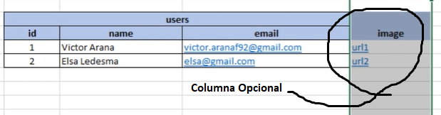
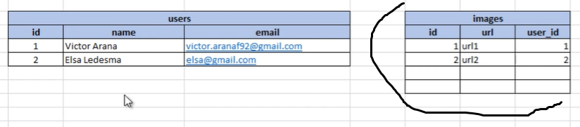
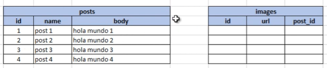
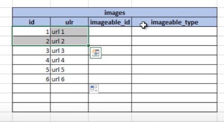
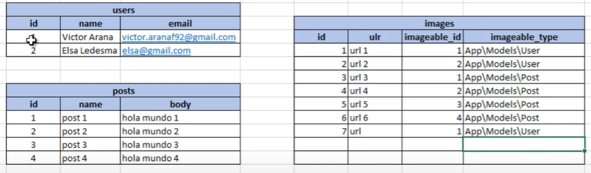

La relacion Polimorfica se da cuando un campo de la tabla es opcional y no deseeamos malgastar memoria reservando espacios en cada registro que podrian no ser usados:
Entonces la movemos a otra tabla relacionada:
Pero hay un problema... la tabla posts tambien presenta esta misma relacion con images:
Entonces, como le hacemos para relacionar las tres tablas a la vez? En lugar de generar una tabla diferente para cada elemento que requiera una imagen opcionalmente, podemos poner todas las imagenes del proyecto en una sola tabla.
Esta tabla por convencion debe tener dos campos especiales, y en nuestra tabla images se llamarian: imageable_type y imageable_id (singualar + 'able_id/type').
En imageable_id ponemos el id del registro que deseamos relacionar (un usuario, o un post), y en imageable_type ubicamos el Namespace del modelo que administra esos registros (por ejemplo 'App/Models/User' para los usuarios).
Y a estos dos campos hay que crearlos como una clave primaria compuesta.
Esto es una relacion Polimorfica de One To One.
Para crear la Clave primaria Compuesta eliminamos el campo id y le pasamos un array el metodo primary():
$table->string('url');
$table->unsignedBigInteger('imageable_id');
$table->string('imageable_type');
$table->primary(['imageable_id', 'imageable_type']);
Corremos la migracion, y ahora en su modelo usamos el metodo morphTo() para indicarle a laravel que esta tabla va a tener una relacion Polimorfica:
// Inverse Polimorfic One To One
public function imageable()
{
return $this->morphTo();
}
Vamos a los modelos de las tablas que estan relacionadas (Modelo User y Post) y en ellas usamos este nuevo metodo, tambien le pasamos como segundo parametro el nombre del metodo que el modelo va a usar para recuperar la imagen:
// Polimorfic One To One
public function image()
{
return $this->morphOne('App\Models\Image', 'imageable');
}
Para acceder a las imagenes de los registros en estos modelos lo hacemos como si fueran una propiedad:
$user->image; $post->image;
Pero si accedemos a estos elementos como metodos nos van a retornar el tipo de relacion que existe entre las dos entidades:
$user->image();
// Illuminate\Database\Eloquent\Relations\MorphOne {#6210}
Ademas si un usuario no tiene una imagen asignada, se la podemos asignar desde el metodo image() encadenando el metodo create():
$user->image()->create([
'url' => 'url1'
]);
Y por logica, en este metodo solo debemos pasarle la url, porque los demas datos se sobreentienden (GRACIAS A LARAVEL).